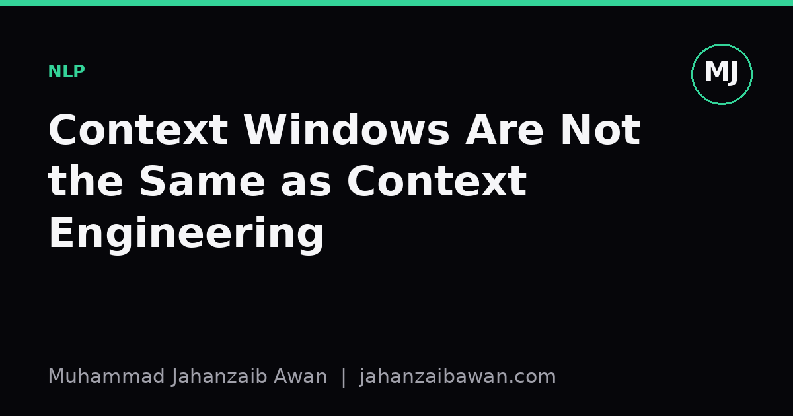

Context Windows Are Not the Same as Context Engineering
A longer context window lets you stuff in more text. It does not guarantee the model will find, trust, or use the right part of it.

The seduction of a bigger window
Every few months another model announces a larger context window, and the implicit promise is that more capacity solves more problems. If a model can read two hundred thousand tokens instead of eight thousand, surely you can just paste in the whole knowledge base and let it work things out. I understand the appeal. It feels like the retrieval problem has been engineered away by brute force. In practice, I have found this to be one of the more persistent illusions in applied machine learning right now.
A context window is a buffer, not a reasoning mechanism. The model still has to decide, token by token, what in that buffer is relevant to the question in front of it. Give it ten relevant sentences buried inside fifty thousand words of loosely related material, and you have not handed it an answer; you have handed it a search problem, and an implicit one at that, since nothing in the architecture guarantees it will search well. The longer the window, the larger the haystack, and the more plausible-sounding but wrong text there is for the model to latch onto.
This matters because the cost of a longer prompt is not just compute. It is attention diluted across irrelevant tokens, it is a higher chance of contradictory statements somewhere in that pile, and it is a model that has to implicitly rank relevance with no explicit signal telling it which passage was authoritative. Context engineering is the discipline of doing that ranking yourself, before the model ever sees the prompt, so that what arrives in the window is already curated rather than merely abundant.
A worked example: the support ticket that goes wrong
Picture a customer support assistant built on retrieval augmented generation. A user asks about refund eligibility for an order placed two months ago. The naive approach dumps the entire product and policy documentation, perhaps thirty thousand tokens, into the context window along with the question, on the theory that the model will find the right clause.
Somewhere in that documentation there are three policies: a general thirty-day refund window, an extended ninety-day window for a specific product category, and a seasonal exception that applied only during a promotional period last year and has since expired but was never deleted from the document store. All three are technically present in the text. The model has no reliable way of knowing which one is current, which one applies to this specific product, and which one is dead text that should have been archived. It picks one, often the one stated most confidently or most recently in the prompt's ordering, and gives the user an answer that is wrong roughly as often as it is right.
Now contrast that with a context-engineered version of the same system. Before the model is ever called, the ticket metadata, specifically the order date and product category, is used to filter the policy documents down to the one clause that actually applies. The expired seasonal policy is excluded at the retrieval stage because it carries an effective-date field that has passed, not because the model was clever enough to notice. The prompt that reaches the model contains perhaps four hundred tokens: the user's question, the single relevant policy, and a short instruction to answer only from the provided policy. The model's job has shrunk from search-and-reason to read-and-answer, and the failure modes shrink with it.
The difference in outcome is not subtle. In the first version, correctness depends on the model guessing well under ambiguity that a human engineer could have resolved in advance. In the second version, the ambiguity has already been resolved by metadata filtering, timestamp checks, and category matching, which are ordinary data engineering tasks, not emergent reasoning tasks. That is the core of context engineering: push the disambiguation work upstream, into retrieval and filtering logic you can test and version, rather than downstream into a model call you cannot fully inspect.
Ordering, redundancy, and the quiet cost of noise
Even when the right information is present, how it is arranged in the context matters more than people expect. Models tend to weight information near the start and end of a long context more heavily than information buried in the middle, a pattern that has shown up repeatedly in careful long-context evaluations. If your single most important fact is sentence four hundred out of six hundred, you are relying on the model to overcome a positional bias baked into how attention behaves over long sequences. Context engineering means placing the load-bearing fact where it is least likely to be lost, typically near the question itself, and treating everything else as background rather than assuming uniform attention.
Redundancy is another quiet cost. If three retrieved passages all say roughly the same thing in different words, you have not improved the model's confidence; you have tripled the token cost and increased the chance that small inconsistencies between the near-duplicate passages introduce a contradiction the model then has to adjudicate. A good retrieval pipeline deduplicates before it concatenates. This sounds like a minor implementation detail, but at scale it is often the difference between a system that answers cleanly and one that hedges, contradicts itself, or produces a response that reads as if it is averaging over conflicting sources.
Noise also compounds with length in a way that is easy to underestimate during development. A ten-document context with one irrelevant document is forgiving. A hundred-document context with thirty irrelevant documents is not, because the irrelevant material is no longer a rounding error; it is a third of what the model has to parse before it even reaches the part that matters. This is why naive long-context systems often degrade quietly rather than failing loudly: they still produce fluent, confident answers, just ones that are subtly wrong more often, which is exactly the kind of failure that is hardest to catch in a quick manual review.
What this means in practice
If I had to compress this into one habit, it would be this: treat the context window as a budget to be spent deliberately, not a container to be filled. Before increasing how much text you feed a model, ask whether you have actually solved the retrieval and filtering problem, or whether you are hoping the larger window will paper over an unsolved one. A bigger window applied to bad retrieval just gives wrong information more room to hide.
Practically, that means building and evaluating the retrieval stage on its own terms, with held-out queries and known-correct documents, before ever looking at end-to-end model outputs. It means being deliberate about ordering, placing the most load-bearing evidence close to the question. It means deduplicating and timestamping sources so that stale or redundant material does not quietly compete with the correct answer. None of this is glamorous, but it is the part of the system you can actually test, version, and improve with confidence, which is more than can be said for hoping a longer prompt will sort itself out.